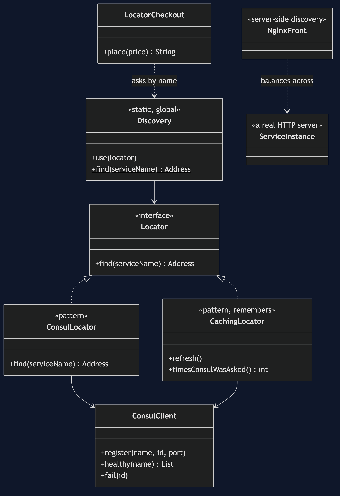
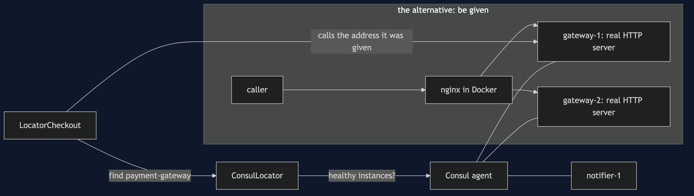
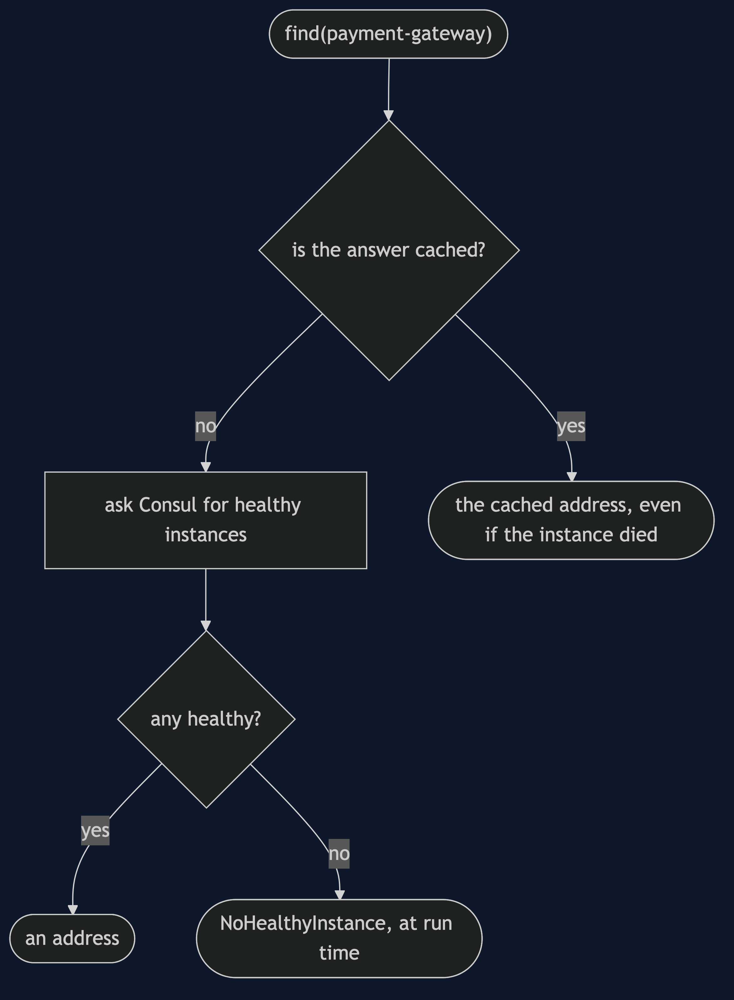
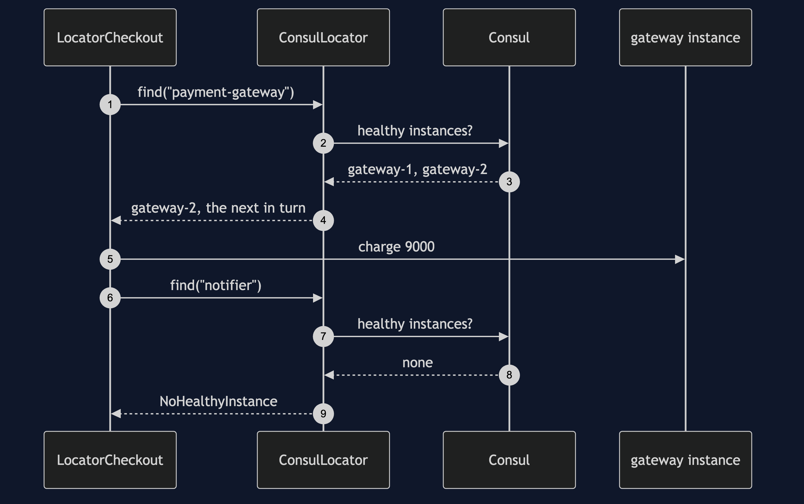
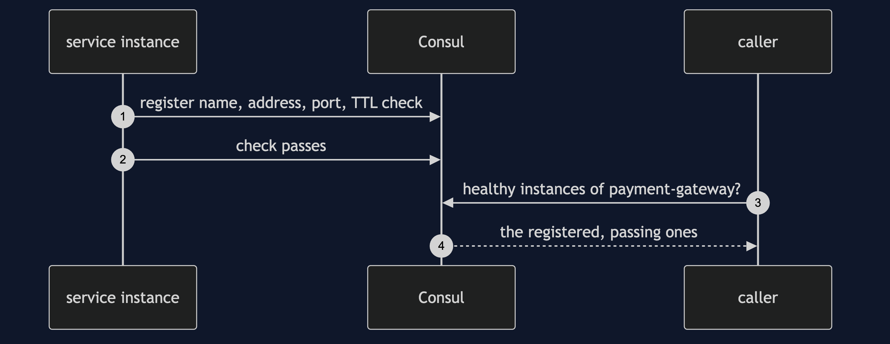
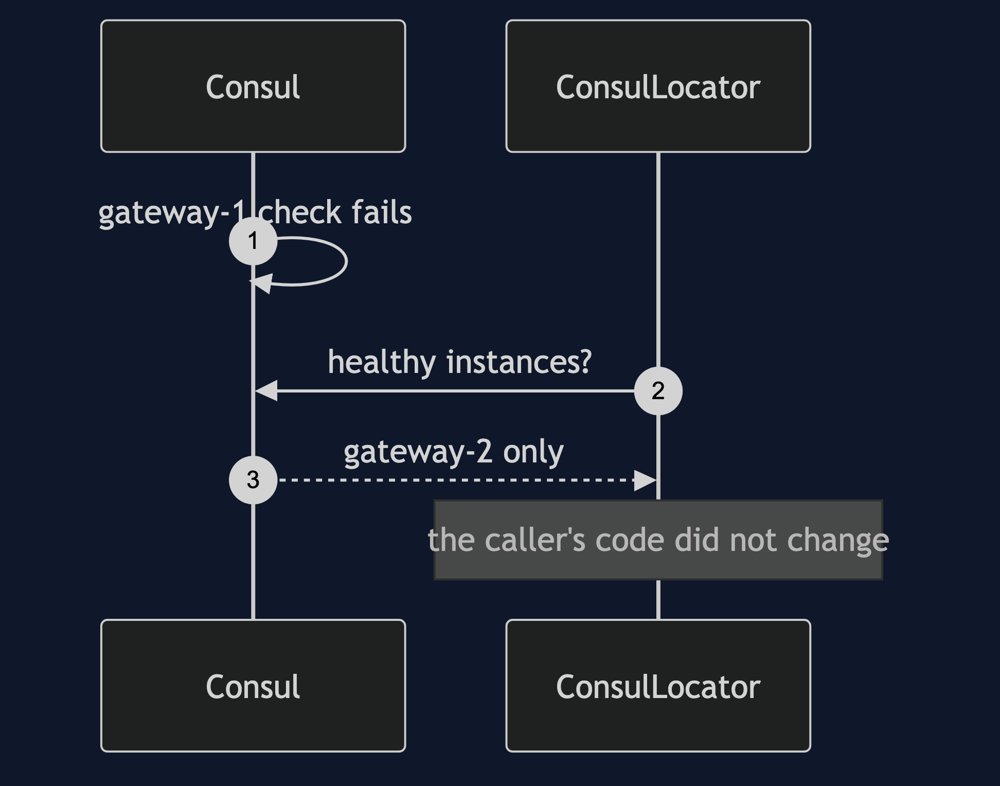
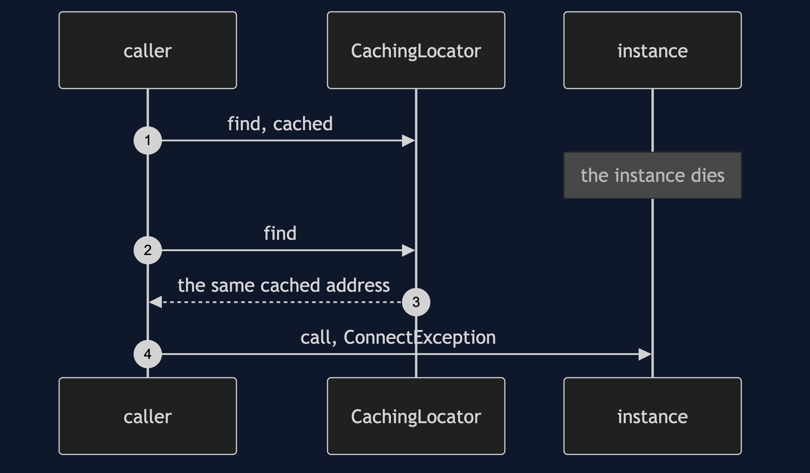
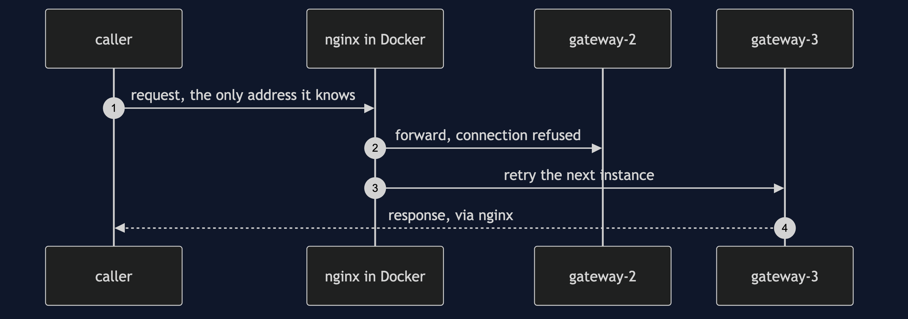

Service Locator with Consul Pattern
src/main/java/com/jk/explore/locatorconsul/
├── ConsulDemo.java composition root — the six acts
│
├── consul/
│ ├── ConsulAgent.java a real Consul agent, as a local process, on free ports
│ ├── ConsulClient.java Consul's HTTP API, called directly: register, check, healthy
│ └── Address.java
├── gateway/
│ └── ServiceInstance.java a real HTTP server standing for one running instance
├── pattern/ ← the real thing
│ ├── Locator.java ask by name, get an address
│ ├── ConsulLocator.java asks Consul for the healthy instances, and rotates
│ ├── CachingLocator.java the same, remembering: faster, and it goes stale
│ ├── Discovery.java the static way in: every class depends on it
│ ├── LocatorCheckout.java asks for "payment-gateway" and "notifier" by name
│ └── NoHealthyInstance.java found at run time
└── nginx/
└── NginxFront.java server-side discovery: nginx in Docker, in front of the instancesService discovery is a service locator over a network: ask Consul for the healthy instances of a service by name. It is the strongest case for the pattern, and it still has the pattern's costs.
This project is the framework version of Service Locator. That project argued against the pattern, and said it is still right for plug-in systems, where what is available is a run-time fact. Service discovery is the same case over a network. This one runs a real Consul agent, real HTTP instances, and an nginx container, and shows the advance, the same costs, a new one (a stale cache), and the alternative: be given an address instead of asking.
Run
./gradlew runSix acts, against a real Consul agent, real HTTP service instances, and, where Docker is available, a real nginx container. Ports are chosen at run time and never printed, so the output is the same every run. The demo needs consul on the PATH; act five needs Docker and the nginx:1.31.5-alpine image.
SERVICE LOCATOR WITH CONSUL — real service discovery
ONE. The locator asks Consul, and Consul answers with what is really running.
registered: two payment-gateway instances and one notifier, each a real HTTP server, each with a health check.
healthy payment-gateway instances Consul reports: 2
four orders placed. served by gateway-1: 2, by gateway-2: 2.
LocatorCheckout never knew an address. it asked for "payment-gateway" by name.
TWO. The genuine advance: instances change and the caller's code does not.
gateway-1's health check is marked failing. healthy instances now: 1
four more orders. gateway-1 served 0, gateway-2 served 4.
gateway-1 recovers and is used again: healthy instances 2.
no change to LocatorCheckout. this is what a registry with static entries could never do.
THREE. The bill: the names are strings, and the compiler says nothing.
a typo, "payment-gatway", compiled. at run time: no healthy instance of "payment-gatway"
the notifier's registration is lost, and nothing about LocatorCheckout says it needs one.
then, on a real order: no healthy instance of "notifier"
and the payment gateway had already been called: 1 charge went through.
the failure arrived in production, after the money moved. the same bill as the hand-built locator.
FOUR. The bill: a cached answer goes stale.
a caching locator asked Consul once, and remembers the answer.
gateway-1 dies, and Consul is told. the cache is not.
the cached address is still handed out, and the call fails: could not reach the dead instance: ConnectException
Consul was asked 1 time in total. faster, and wrong.
the uncached locator recovers at once: handled by gateway-2
after a refresh the cache heals too. deciding when to refresh is now your problem.
FIVE. The alternative: do not ask. be given.
nginx, in a Docker container, was given the healthy instances once, from Consul.
the caller was given one address, nginx's, and asked nothing. 4 of 4 requests succeeded.
it spread them across the two instances: gateway-2 served 2, gateway-3 served 2.
gateway-2 is stopped. 4 of 4 more requests still succeed: all 4 were served by gateway-3, because nginx retried the next instance.
the class never knew, because it never looked anything up.
SIX. The verdict.
service discovery is the strongest case for a locator: where instances are is a run-time fact.
even so, prefer to be given an address by the platform, a proxy or DNS, than to have every class ask.
where you have met this: Spring Cloud's DiscoveryClient, Consul, Eureka, and Kubernetes DNS.Test
./gradlew test3 test classes, 8 test methods, offline, against a real Consul agent (skipped, not failed, when consul is not installed) and a real nginx container (skipped when Docker or the image is unavailable).
Technologies and versions
| What | Version | Why it is here |
|---|---|---|
| Java | 21 | The repository standard, via the Gradle toolchain block |
| Gradle | 9.2.1 | The wrapper in this directory; no separate install needed |
| Consul | 1.16 or newer, on the PATH | The real service-discovery agent, run in development mode as a local process |
| Docker | any recent version | Runs nginx for act five. Optional: without it, that act is skipped |
| nginx | nginx:1.31.5-alpine image | Server-side discovery: the caller is given one address |
| JUnit 5 | 5.10.2 | Test runner |
No Java library beyond the JDK: Consul is called over its HTTP API and the instances are com.sun.net.httpserver servers. See docs/dependencies.md.
Learning Material
| Document | What it covers |
|---|---|
docs/problem-statement.md | The partner's checkout, across a network |
docs/service-locator-with-consul-pattern-explained.md | The advance, the old costs, a new one, and being given an address |
docs/class-diagram.md | The types |
docs/architecture-diagram.md | The checkout, Consul, and the instances |
docs/data-flow-diagram.md | One lookup: an address, a stale one, or nothing |
docs/sequence-diagram.md | Written for a listener with the screen off |
docs/uml-diagram.md | Four sequences |
docs/animation.html | The six acts in a browser |
docs/prerequisites.md | What you need to know |
docs/session.md | A one-hour taught session |
docs/spec.md | The generated specification |
docs/youtube.md | Title, description and chapters |
docs/dependencies.md | What Consul, Docker and nginx are, what they cost, and that skipping this project loses none of the pattern |
The pattern in one picture

Where each piece sits

How one request moves

Who calls whom, in order

All four sequences




Video
Built from video/scenes.py by video/build_video.sh. The rendered file is not committed; see the repository README for why.
Where you have already met this
Spring Cloud's DiscoveryClient, Netflix Eureka and Consul itself. Kubernetes DNS is the given form.
When this is too much
For a fixed set of services with fixed addresses, configuration is simpler and needs no registry at all.
Where this sits
This project pairs with Service Locator, and is a framework version in foundational-design-patterns. Its alternative is Dependency Injection's idea, applied to a network address.